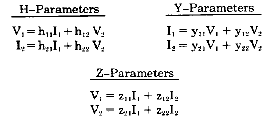
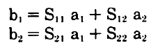

2. Paramètres S
© J.L. Noullet 20132.1 Représentation matricielle des quadripôles
Un quadripôle (en anglais "Two port") est un circuit comportant deux paires de terminaux.Chaque paire de terminaux ou port peut être utilisé comme entrée ou sortie pour le signal.
Les deux ports peuvent éventuellement avoir un terminal commun.


Chaque matrice décrit entièrement le quadripôle et peut donc être exprimée en fonction d'une des autres.
2.2 Ondes incidentes et réfléchies
Comme on l'a vu au 1.4, après qu'on ait convenu d'une impédance de référence Z0, le voltage observable à un port peut être considéré comme la somme algébrique de :- un voltage incident Ei qui est la valeur correpondant au transfert de puissance maxi
- un voltage réfléchi Er qui traduit éventuellement une non-adaptation d'impédance
- a = onde incidente
- b = onde réfléchie

2.3 Paramètres S
Les relations entre les ondes peuvent être exprimées sous forme d'une matrice de 4 coefficients sans dimension, les paramètres S :

L'appellation "paramères S" vient de "Scattering Parameters", littéralement "paramètres de dispersion", une expression qui vient de l'optique, où la transition entre deux milieux différents donne lieu à réflexions et dispersion de la lumière.
A condition d'être accompagnée de la valeur de l'impédance de référence, la matrice S décrit entièrement le quadripôle et peut donc être exprimée en fonction de chacune des matrices H, Y, Z et réciproquement.
L'intérêt de la méthode est le même que pour le coefficient de réflexion appliqué à caractérisation d'un dipôle (1.4)
- S11 = coefficient de réflexion au port 1
- S12 = coefficient de transmission du port 2 vers le port 1
- S21 = coefficient de transmission du port 1 vers le port 2
- S22 = coefficient de réflexion au port 2
Sinon, S12 et S21 sont des gains en tension normalisés en puissance, c'est à dire qu'une valeur de 1 correspond à un gain en puissance de 1.
2.4 Formules de conversion
Les tables suivantes donnent l'équivalence entre les paramètres S et les paramètres Y, Z, H normalisés, c'est à dire calculés pour Z0 = 1.Lorsque Z0 est différent de 1 :
- multiplier les Z par Z0
- diviser les Y par Z0
- multiplier H11 par Z0, diviser H22 par Z0
D'aprés l'article de référence de Richard Anderson, publié par Hewlett-Packard sous le titre AN-95